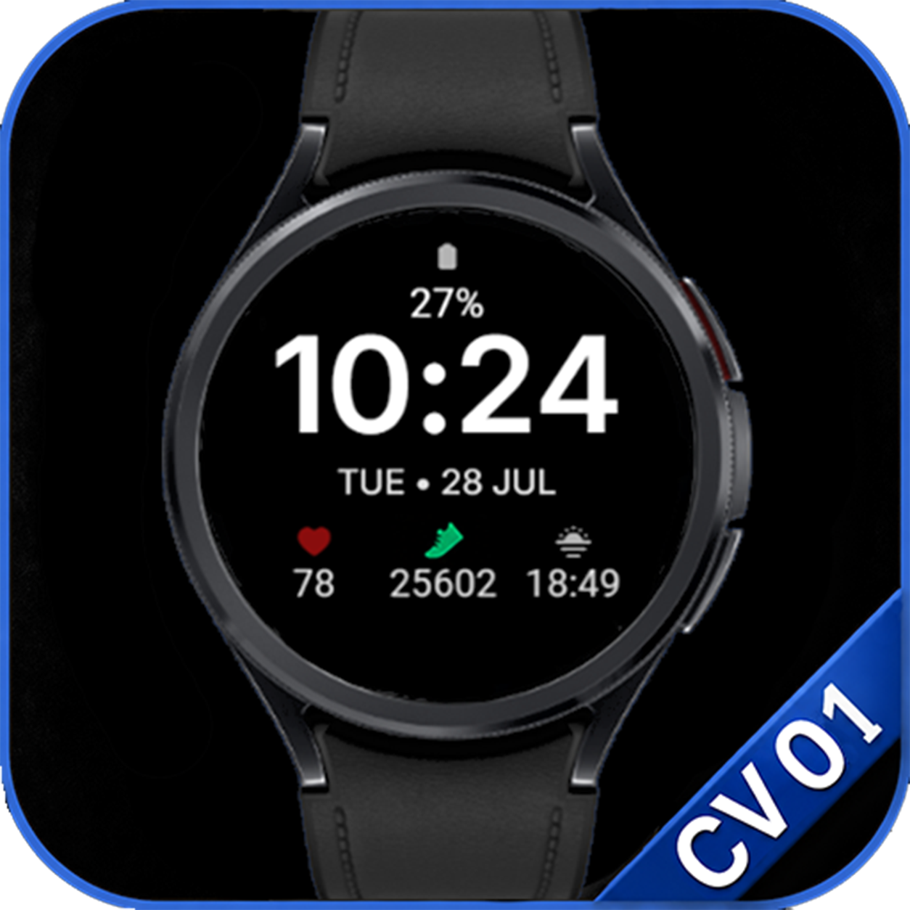
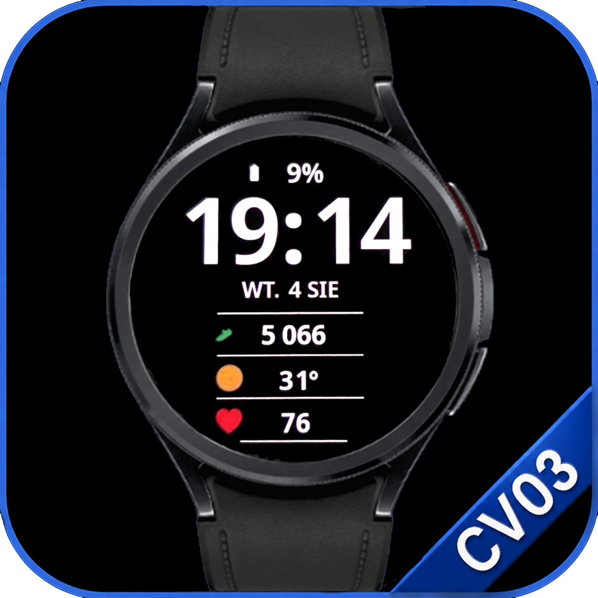
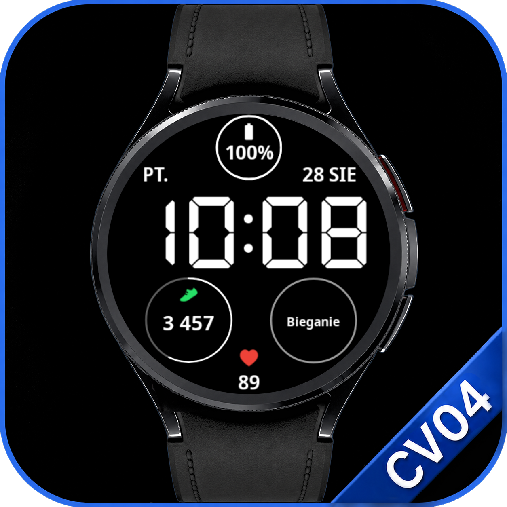
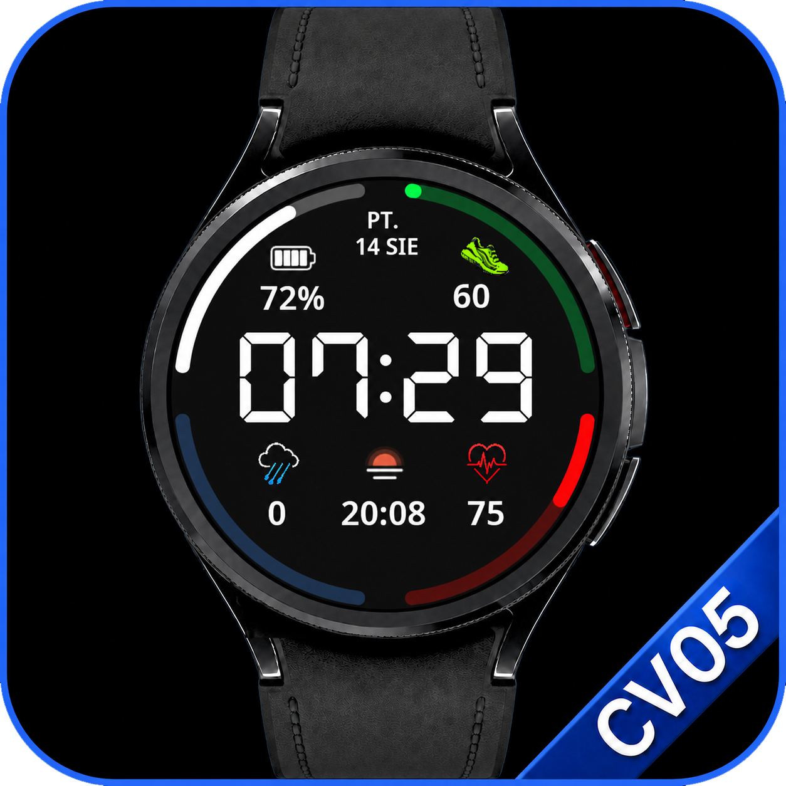
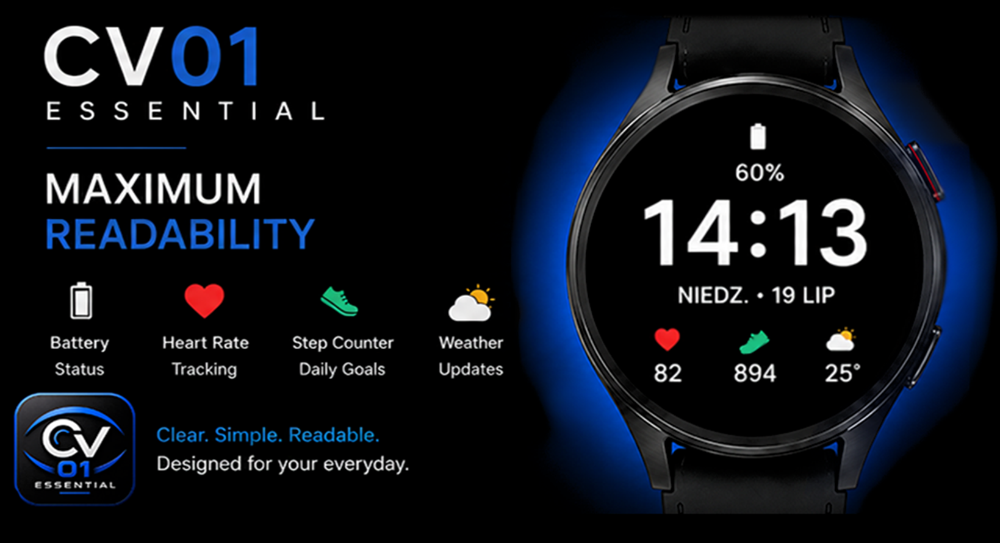
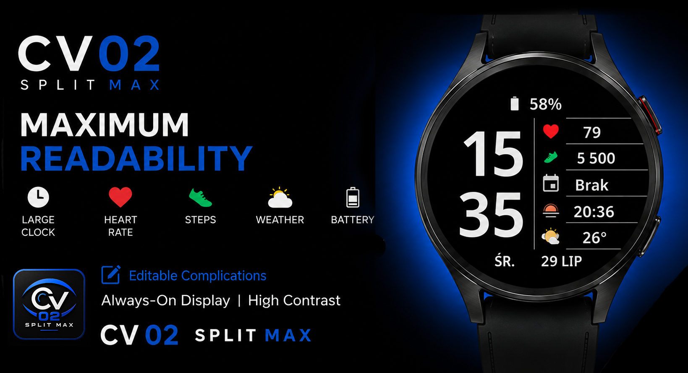
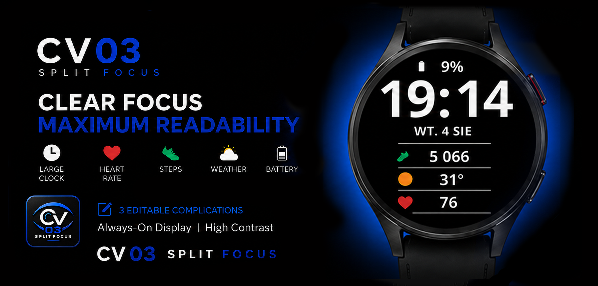
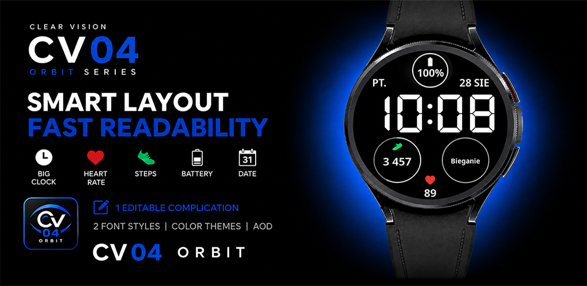
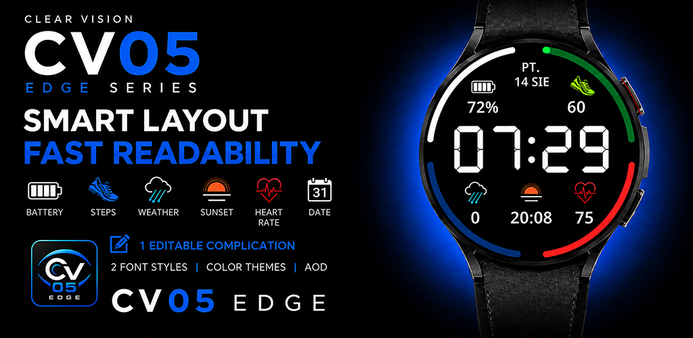

CV01 Essential
Large digital time with essential daily information and customizable complications.
- Large digital clock
- Date and weather
- Steps, heart rate and battery
- Editable complications
- Selectable color themes
- Always-On Display
Watch face collection
A growing collection of practical Wear OS watch faces built around readability, clean layouts and useful information.

Large digital time with essential daily information and customizable complications.

An extra-large clock paired with five clear information panels in a distinctive split layout.

A focused layout with a dominant digital clock and three large customizable complications.

A digital layout with a large clock, clear circular indicators and one complication you can personalize.

An edge-driven digital layout with a large clock, four progress bars and one complication you can personalize.

Essential design
Maximum clarity with a large digital clock and essential daily information.
CV01 keeps the time easy to read while placing battery, date and customizable complications in a clean, balanced layout. Selectable color themes customize the clock, battery value and date.

New release
Maximum readability with a large digital clock and four editable complications.
CV02 Split Max is designed for users who want more useful information without sacrificing clarity. The divided layout keeps the time dominant while placing key data in one easy-to-scan column. Selectable color themes customize the clock, battery value and date.

Focus design
Clear focus, maximum readability and three large complication fields.
CV03 keeps the time dominant while giving you quick access to the information you choose. The clock, battery value and date support selectable color themes.

Orbit design
Large digital time, two font styles and practical data in a clean layout.
CV04 Orbit keeps the clock at the center. Battery and steps use clear progress indicators, heart rate stays visible, and the lower-right complication can be personalized. Choose between two hour font styles and selectable color themes.

Latest design
Large digital time framed by four clear progress bars.
CV05 Edge turns the outer edge into useful status information. Progress bars show battery level, steps toward your daily goal, precipitation probability and heart rate on a 0–240 BPM scale. One complication can be personalized, while the time supports two font styles and selectable color themes.
Why Clear Vision
Every layout is built to reduce visual noise and make everyday information easier to find.
Large typography and deliberate spacing make the time quick and comfortable to read.
Clear separation between the background and essential information improves legibility.
Weather, battery, health and activity data stay accessible without cluttering the layout.
Designed for compatible Wear OS smartwatches with a clear and efficient Always-On Display.
Watch face gallery
Explore CV01 Essential, CV02 Split Max, CV03 Split Focus, CV04 Orbit and CV05 Edge, including active layouts, personalization, color themes and Always-On Display.
Growing collection
Clear Vision continues to grow with new high-contrast designs built around the same core principles.
Available now on Google Play
Available now on Google Play
Available now on Google Play
Available now on Google Play
Latest Clear Vision design
Additional Wear OS watch faces will follow.
Getting started
Step-by-step instructions for installing and configuring Clear Vision watch faces on a Wear OS smartwatch.
Open installation guide →Help and answers
Find answers about compatibility, complications, customization, installation and updates.
Open FAQ →